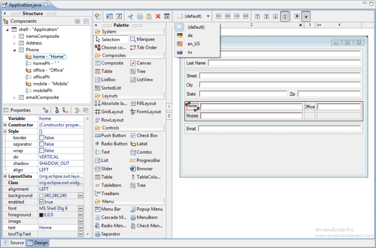

Features
The editor supports the following major features::

Bi-directional Code Generation
-
read and write almost any format and reverse-engineer most hand-written code
Internationalization (i18n) / Localization
-
externalize component strings, create and manage resource bundles.
Custom Composites & Panels
- create custom, reusable components.
Factories
- create custom factory classes and methods.
Visual Inheritance
- create visual component hierarchies.
Event Handling
- add event handlers to your components.
Menu Editing
- visually create and edit menubars, menu items and popup menus.
Morphing
- convert one component type into another.